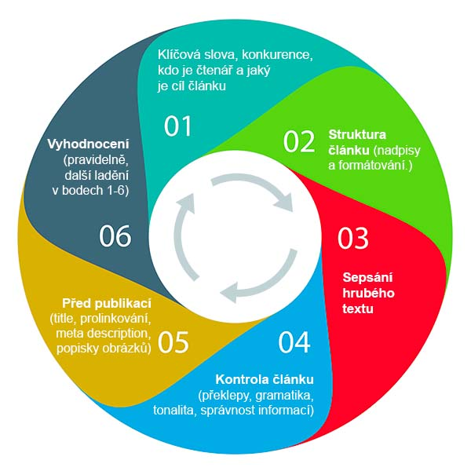
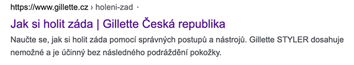

SEO Copywriting: jak psát články pro vyhledávače
Největší výzvou každého copywritera a content markeťáka je napsat článek, který budou vyhledávače milovat. Možná máte pocit, že psát text pro googlebota a člověka je velký rozdíl. No, jenže on není.
Sice ještě po světě nepobíhaj terminátoři lačnící po vyhlazení lidstva, ale vyhledávač má od nás dost indicií a rozumu k zobrazení toho nejvhodnějšího obsahu. Tenhle kompletní průvodce vám se psaním (nejen) pro vyhledávače pomůže.

Co je obsahem článku? Projdeme si všech šest bodů z infografiky výše.
- Než začnete psát…
- Struktura článku
- Jde se do psaní
- Kontrola článku
- Než budete publikovat…
- Vyhodnocení, aktualizace
Než začnete psát…
Není to jen o psaní. Pečlivá příprava je základem SEO copywritingu, ušetří čas před případnými opravami. A navíc zajistí, že opravdu víte, co děláte. Před zmáčknutím prvního tlačítka na klávesnici se zastavte nad těmito body.
1. Klíčová slova
Na začátku bylo slovo. Klíčové slovo. Pak si zákazník přečetl váš článek. Při druhé návštěvě nakoupil… Ale zpět na začátek. Pokud chcete dát článku život a zajistit pravidelný přísun čitatelů z vyhledávačů, nevyhnete se jim. Ani byste neměli. Ideálně dostanete od SEO specialisty seznam slov již se zadáním článku. Analýzu klíčových slov si probereme někdy jindy (a zajímat možná bude spíš někoho jinýho).
Pro článek by měly klíčová slova dodržet pár pravidel:
- Klíčová slova souvisí jen s daným článkem a nikoliv s jinou stránkou webu (nechceme mít dvě stránky, co se rvou o stejný dotaz)
- Ideálně budou v seznamu také tzv. long tail výrazy = klíčová slova o více slovech, která mají zpravidla nižší hledanost, ale vyšší relevanci
Pokud dodal klíčová slova důvěryhodný SEO specialista, nemusíte se o tyhle dva body vůbec starat. Na vás bude pouze jejich správné zakomponování do článku, obzvlášť do nadpisů. Klíčová slova někdy udělají i část práce za vás, protože jejich seznam do jisté míry dokáže určit podobu článku.
2. Proč a jak tenhle článek psát
Search intent. Když si tenhle marketingový termín přeložíte, bafne na vás “záměr hledání”. A přesně o to jde. Zamyslete se nad tím, co opravdu chcete článkem říci. Když někdo hledá zadaná klíčová slova, co očekává, že v Google najde? Vy mu chcete nabídnout tu nejlepší odpověď.
To však není to jediné, co byste měli před samotným psaním zvážit. Zkuste si položit ještě následující otázky:
- Co je smyslem toho článku? Chcete poradit, vzdělávat, odpromovat produkt nebo třeba jen dát pár tipů?
- Pro koho ten článek píšete? Kdo zadal klíčového slovo do vyhledávače? Mohl to být kdokoliv nebo nějaká specifická skupina lidí?
3. S kým se budete prát o pozici?
Článkem chcete prorazit na první stranu ve výsledcích vyhledávání. Druhá nebo třetí strana už vám moc kliků nepřinese. Proto zadejte klíčová slova do vyhledávače a mrkněte se na první 3 články. To jsou ty, které chcete porazit a nabídnout lepší obsah!
Struktura článku
Jeden z nejdůležitějších bodů. Tady se rozhoduje, zda se článek vyhledávačům i lidem dobře čte. Návštěvník dostal vaši odpověď na svůj dotaz. Pokud ho teď ztratíte z důvodu nepřehlednosti a on klikne na jiný výsledek v Googlu, máte červený puntík. Puntík, který vás posune dolů. Nezapomeňte ani na zobrazení článku na mobilu.
Tyhle tipy pomohou:
- Bacha na ohromné odstavce plné textu. Fakt se blbě čtou, já nezvládl ani Tolkienovy půl stránkové výlevy o kráse tekoucího potůčku. A internet je daleko více nekompromisní. Rozbijte své odstavce na více odstavců a vložte mezi ně obrázek.
- Nadpisy a podnadpisy jsou nad zlato. Vyhledávač i čitatel díky nim rychleji najde právě tu část, kterou hledá. Možná je to užitečnější spíše pro mobilní scrollisty, ale pamatujte na to, že dneska je zobrazení na mobilu tím nejdůležitějším. Dodržujte také posloupnost nadpisů, např. h1 -> h2 -> h3 -> h4 -> h2 -> h3. Níže vždy o jeden, nahoru klidně o více.
- Odrážky a číslování. Hele, nenakecáte mi, že se vám tenhle návod dobře nečte. Myslím, že právě i to pečlivé formátování s odrážkami tomu pomohlo.
- Vytučněte hlavní hesla nebo věty z každého odstavce.
Čas začít psát!
Pokud jste se pečlivě připravili, bude vám to psát skoro samo. Mějte v hlavě své publikum, používejte klíčová slova v odstavcích a nadpisech, vybírejte podstatné informace. O tom všem už jsem psal výše. Ale mám ještě další 3 tipy, díky kterým můžete článek opravdu vyšperkovat:
- Vžijte se do čtenáře. Co potřebuje znát jako první? Budujte kontext a seřaďte informace tak, aby to dávalo smysl.
- Pro udržení pozornosti často funguje jeden trik – na začátku odstavce řekněte to nejdůležitější a pak to vysvětlujte.
- Pokud to čitatel ocení, klidně svůj článek nějak odlehčete. Samozřejmě ale vodsamsaď posamsaď.
Kontrola článku
Největší chybou, které se může copywriter dopustit, je publikování článku hned po jeho sepsání. Každá chyba totiž může snížit váhu článku. Chcete být expertem, nikoliv školákem co dostal trojku z diktátu.
Po sepsání nechte článek pár hodin nebo i den odležet a následně si zkontrolujte gramatické chyby, překlepy, tonalitu článku a odborné výrazy. Je dobrý nápad přizvat i nějakého odborníka, aby článek posvětil. Navíc další osoba může vidět věci vlastnímu oku ukryté.
Článek je připraven k publikaci
Gratuluju, to nejtěžší máte za sebou. Zbývá ale ještě několik bodů, které s článkem souvisí. Některé z nich mohou být stále ve vaší kompetenci. Tak se na ně pojďme mrknout hezky zblízka.
Title a meta description
Každý text má svůj význam. A význam meta textů se od běžného textu v článku trochu liší. Oba texty uvidíte přímo na odpovědi Googlu na dotaz “jak si oholit záda”:

Jejich hlavní funkcí je přilákat uživatele ke kliknutí. Protože i když se zobrazíte na prvním místě a ten na druhé pozici má atraktivnější text, přijdete o prokliky. Navíc ve výsledcích zvýrazní hledané klíčové slovo. Přečtěte si jak napsat meta description a více o meta title
Vnitřní prolinkování
Odkazy mezi stránkami našeho webu hrají při publikaci článku důležitou roli. Nejde pouze o klíčová slova, pro která článek píšeme. Ale jde také o další stránky a jejich klíčová slova, která novým článkem podpoříme. Důležité je, aby odkaz obsahoval správný anchor text (klíčové slovo, ze kterého se odkazuje) a byl příbuzný tématu článku.
1. Odkazy z článku
Dám jednoduchý příklad. Prodáváme kuchařky. Náš nový článek je recept na česnekovou pomazánku (no co, tak smrdím, mám pro ně slabost). Z nového článku s receptem budeme odkazovat z klíčového slova “kuchařka” přímo na produkt. Zakomponování by přitom mělo působit jako přirozená součást textu.
2. Odkazy na článek
Ale pozor, funguje to i obráceně. Odkazujte i ze svých starších článků s podobným tématem na nový článek. Pokud máte napsaný článek s receptem na vajíčkovou pomazánku, zakomponujte odkaz na nový článek do něj. Například skrze větu: Máte raději něco ostřejšího? Vyzkoušejte naši česnekovou pomazánku.
Obrázky, grafika
Jako copywriter můžete být tím, kdo vybere i samotné obrázky. O tom, že mají souviset s tématem, asi povídat nemusím. Obrázek Miloše Zemana v receptu na česnekovou pomazánku by byl pěstí do oka. Důležité jsou však i související popisky.
Alt tag je okem neviditelný popisek. Měl by co nejpřesněji popisovat obsah obrázek. Do článku o receptu na česnekovou pomazánku chcete vložit obrázek se všemi surovinami. Jak jej pojmenujete? No přece “suroviny na česnekovou pomazánku”. Klíčové slovo je vítaným bonusem.
Popisek pod obrázkem se už neschová. Právě to jej činí tak důležitým. Mrkněte na tuhle citaci od Neil Patela:
Popisky pod obrázky bývají čteny až o 300% více než zbytek textu. Takže jejich žádné nesprávné využití znamená ztrátu příležitosti zaujmout potenciální čtenáře.
Tady se na klíčové slovo klidně vykašlete. Hrajte si s textem, zaujměte!
Externí odkazy na článek
Tohle už nejspíš nebude váš úkol, ale neusnul bych, kdybych to sem nenapsal všechno. Po publikaci článku mu můžete ještě pomoci k rychlejším výsledkům. Pokud máte možnost, zkuste získat i pár externích odkazů pro svůj článek. Rozešlete odkaz na článek odborným webům nebo ho zapojte do vlastní linkbuildingové strategie.
Vyhodnocujte, upravujte
Napsáním a publikací článku práce nekončí. Pokud jste postupovali správně, ten text vám bude ještě roky sloužit. Ale nepůjde to bez řádné péče. Sledujte výsledky své práce a článek stále vylepšujte. Zobrazuje se vysoko, ale málo se na něj kliká? Upravte title a meta description. Objevily se pod článkem v komentářích nějaké připomínky nebo nové myšlenky? Zakomponujte je.
Možná to na první pohled působí komplikovaně. Ale zjistíte, že mnohá pravidla a důsledná příprava vám dají berličku, s jejichž pomocí článek sepíšete během několika desítek minut. Takže se uvidíme na první stránce vyhledávače 🙂
Potřebujete pomoct s obsahem nebo SEO strategií? Podívejte se, jak probíhá spolupráce, nebo mi rovnou napište.

Marek Turnhofer
O autorovi
Egestas quis feugiat urna, tincidunt ut sem sit in ipsum ullamcorper etiam varius turpis tincidunt potenti amet id vel, massa purus arcu lectus scelerisque quisque velit cursus et tortor vel viverra.